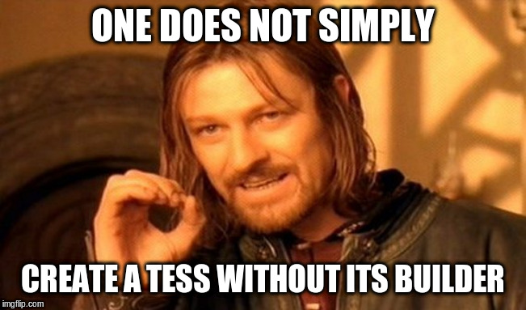

What is a triangle?
Everyone knows what a triangle is… but what is a triangle on your GPU? In luminance, a triangle can be represented in lots of ways. In our case:
- A triangle has three vertices.
- Each vertex has a position in 2D, represented by two floating point values on 32-bit.
- Each vertex has a color, represented as RGB on 8-bit unsigned integers.
The first thing to do is to create… types. You will see throughout this book that luminance is heavily type-oriented. Don’t freak out. luminance requires you to define your type in a way it can acknowledge how vertices’ data are formed. The following, for instance, will not work:
#![allow(unused_variables)] fn main() { type Position = (f32, f32); type RGB = (u8, u8, u8); type Vertex = (Position, RGB); }
But the real vertex definition is very, very similar. Hang on.
Defining your vertex type
In order to define our vertex type, we need to create a struct that will implement the Vertex
trait. That trait requires various information to be provided by the implementor and you don’t even
have to worry about those because a crate exists to automatically implement such a trait:
luminance-derive.
First thing first: add luminance-derive to your project’s [dependencies] section:
luminance-derive = "0.5"
Simple. One last thing: when you will use the Vertex derive annotation, you will have to provide
a vertex semantics type, implementing the Semantics trait. Again, you don’t have to implement
such a trait by hand: luminance-derive will handle all that for you.
Vertex semantics are a way to tell luminance what the relationship between all objects you intend to create and the way they will be rendered is. In our case, we just only need two semantics: vertex positions and vertex colors. Let’s create our semantics type:
#![allow(unused_variables)] fn main() { use luminance_derive::Semantics; }
Our proc-macro derive, yay. Let’s use it:
#![allow(unused_variables)] fn main() { #[derive(Copy, Clone, Debug, Semantics)] pub enum VertexSemantics { #[sem(name = "position", repr = "[f32; 2]", wrapper = "VertexPosition")] Position, #[sem(name = "color", repr = "[u8; 3]", wrapper = "VertexRGB")] Color, } }
Woah, that’s a lot of new syntax!
Indeed, let’s dig the syntax:
- The
Semanticsderive annotation marks anenumas being representative of vertex semantics. Currently, nothing else thanenumis supported. - The type implementing
Semanticsmust also implementCopy,CloneandDebug. - Each variant of the
enumrepresents a distinct vertex semantics. - The syntax
#[sem(..)]provides several mandatory information:- The
name = "position"annotation gives luminance a way to recognize the semantics in shader stages. You don’t have to worry about what it means so far but keep in mind that that identifier must be unique. repr = "[f32; 2]"tells which is the underlying expected type of the semantics. That constructs a strongly-typed assumption about the semantics. A"position"is a 2Df32. Period. You have a large list of types you can use here but you are limited to the implementors ofVertexAttrib.- The
wrapper = "VertexPosition"annotation generates a new type calledVertexPositionand in scope in the module you declared theenum. That type is one of the only ones which are recognized as being usable with theSemanticsenumyou just declared — it implements theHasSemanticstrait for whichHasSemantics::Sem = VertexSemantics.
- The
All of this might be a bit confusing; let’s clarify even further. When you declare an enum
annotated with #[derive(Copy, Clone, Debug, Semantics)], luminance-derive does automatically
implement Semantics for you and generates as many types as variants in your enum. Those types
represent vertex attributes types you will be able to use to construct types that will correctly
implement the Vertex trait.
Talking about Vertex, let’s go and define our vertex type. The Vertex derive annotation works
on both structs and tuple-struct. Import the Vertex proc-macro first:
#![allow(unused_variables)] fn main() { use luminance_derive::{Semantics, Vertex}; }
And then define your Vertex type (it’s possible to use the same typename because proc-macro won’t
clash with types):
#![allow(unused_variables)] fn main() { #[derive(Vertex)] #[vertex(sem = "VertexSemantics")] pub struct Vertex { position: VertexPosition, #[vertex(normalized = "true")] color: VertexRGB, } }
A new syntax! So:
- The
Vertexderive annotation marks astructas being a valid vertex type. Currently, onlystructwith fields and tuple-structare supported. - The
#[vertex(sem = "VertexSemantics")]provides a mapping to a type that represents your vertex semantics. - Each field must have a type that implements
HasSemantics<Sem = VertexSemantics>in that case. Don’t forget about thewrappertypes that got generated with theSemanticsderive: those types are valid as fields’ types here. - The special
#[vertex(normalized = "true")]annotation marks a field as being normalized. Normalized fields make sense when the field is of an integral type, such as[u8; 3], which is unsigned integral. When trying to fetch normalized vertex attribute, a shader stage will get normalized floating point numbers (lying in[0; 1]) instead of the typical e.g.[0; 255].
And we are good to go as our vertex type is now live!
Some notes: the generated wrapper types have some useful methods and implementors. You can easily get a list by running
cargo doc --open.
Defining a triangle
A triangle is just three points — three vertices. Let’s define them.
#![allow(unused_variables)] fn main() { const VERTICES: [Vertex; 3] = [ Vertex { position: VertexPosition::new([-0.5, -0.5]), color: VertexRGB::new([255, 0, 0]), }, Vertex { position: VertexPosition::new([0.5, -0.5]), color: VertexRGB::new([0, 255, 0]), }, Vertex { position: VertexPosition::new([0., 0.5]), color: VertexRGB::new([0, 0, 255]), }, ]; }
It’s that simple.
Disclaimer: an on-going patch will soon allow to build vertices with
const fnat the vertex type level too; not only the vertex attributes.
The final part of the recipe: GPU tessellations
Tessellations?
In luminance, everything that has a vertex or that must be rendered is done via a
tessellation as described by the Tess type. GPU tessellations provide information about:
- The nature of the topology of the underlying vertex mesh. That is, zero, one or several buffers describing the raw topology of the mesh.
- The way vertices are linked to each other. That is done via several ways that are going to be
explored in this book, but so far, we’ll stick to primitive modes, encoded via the
Modetype. - And a lot of cool features you should be impatient to discover, but everything happens to those who wait. ;)
Creating a Tess will upload our vertices to the GPU so that we have an object (i.e. Tess) to
manipulate and render our triangle. However, one does not simply create a Tess: we need
TessBuilder, which follows the [builder pattern].

Let’s see the code to create our Tess via TessBuilder.
#![allow(unused_variables)] fn main() { use luminance::tess::{Mode, TessBuilder}; }
You really thought you wouldn’t need to import those?
#![allow(unused_variables)] fn main() { // at the beginning of main_loop let triangle = TessBuilder::new(&mut surface) .add_vertices(VERTICES) .set_mode(Mode::Triangle) .build() .unwrap(); }
If you don’t specify the Mode, the TessBuilder defaults to Mode::Point, which will not
connect your vertices between them and will leave three independent points on your screen. Also,
in a production application, you shouldn’t use .unwrap() but instead propagate the error or
treat it.
We have everything we need to represent our triangle on GPU with luminance. Let’s go on and see how we can render it into our frame buffer.